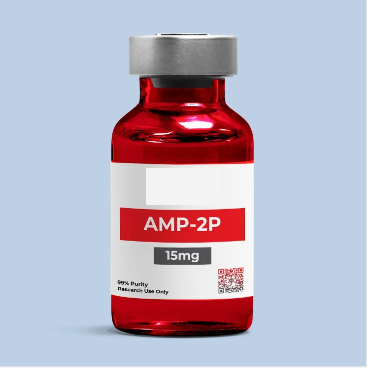

SOLO PARA USO EN INVESTIGACIÓN DE LABORATORIO – NO APTO PARA CONSUMO HUMANO O VETERINARIO.
AMP-2P es un péptido de investigación descrito por el proveedor como un compuesto de acción sobre dos receptores. Se suministra como material de referencia para aplicaciones de investigación de laboratorio y estudios in vitro.
Su caracterización específica, los receptores implicados, su actividad biológica y sus posibles mecanismos de señalización deben verificarse mediante documentación científica y analítica específica del producto.
Las condiciones indicadas corresponden a la información comercial del proveedor y deben contrastarse con la documentación específica del lote y los procedimientos validados del laboratorio.
Suministrado exclusivamente a profesionales calificados para aplicaciones de laboratorio controladas. No se proporciona información sobre dosificación o administración. El comprador asume la responsabilidad del manejo seguro y el cumplimiento normativo.
Próximamente podrás descargar los certificados de pureza y análisis de laboratorio (HPLC / MS).